If you find yourself overwhelmed by the amount of supplies needed, don't be alarmed. From the selections below, I don't even use all. Let's say you're someone who likes to paint. You don't need 1,000 paint brushes to paint. You could paint using 12 brushes or even less. There's a bunch of tips and tricks out on the internet that you can use to bypass the need for a new tool. Let's say for the one-step looping tool. You can make your loops by usering a set of pliers. It gets the job done. However, some may want some consistencies and will rely on the one-step looper. If you feel you really need and will use something, buy it. It also helps if you figure out what kind of craft specialty you want to be in. Someone who makes keychains, might not need a UV lamp. I've sorted the images into their respective categories. A lot of craft stores will have the tools you need -- if not in store, then definitely browse online.
───୨Stringing Materials─
Stringing material will vary. I like using thicker threads like .7mm. I've been leaning more towards wire and there's a bunch that I use. I recommend making sure you use ones that are scratch and tarnish resistant. Be careful with some copper based ones that have a colored coating on it. The color may rub off and the copper will be exposed and oxidize. Another thing to worry about are elastic strings. Make sure you get the ones that are super stretchy and won't snap. With age, the elasticity can wear out and make the band brittle. That makes it susceptible to breaking and snapping. With string, also make sure knots are tight and secure. Especially with bracelets, I find that some threads might break if exposed constantly to water which will stretch the string. Constant tugging will also break down the string fibers, causing it to tear. That's why, as beginners, I recommend using cheaper craft beads, doing a lot of pull tests, and testing different types of strings.
- Stretch cord (clear or colored)
- Nylon cord
- Elastic thread
- Fishing line / monofilament
- Waxed cotton cord
- Satin rattail cord
- Beading wire (tiger tail)
- Chains (gold, silver, alloy)
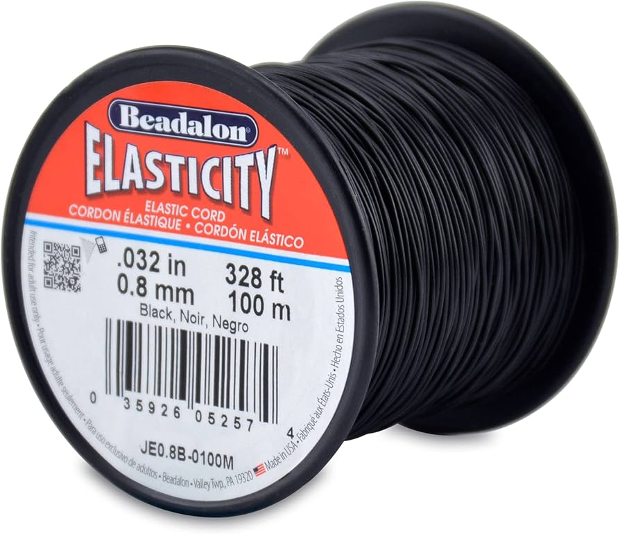
Beadalon Stretch Cord
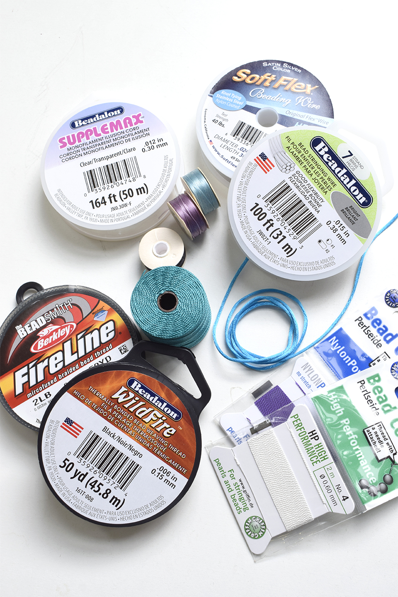
String
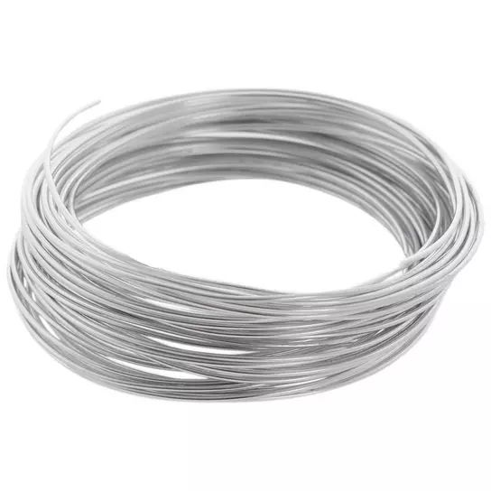
Beading Wire
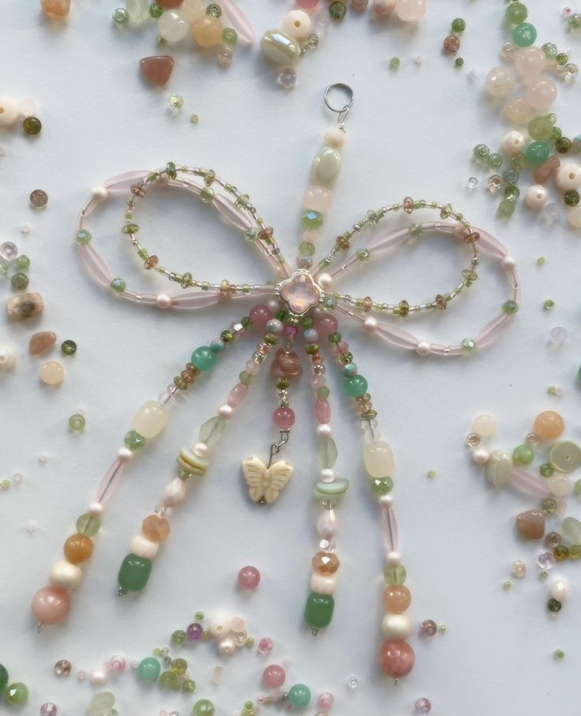
Craft 1 - Wire and Beads
───୨Hardware Findings─
- Jump rings
- Lobster clasps
- Toggle clasps
- Barrel clasps
- Crimp beads
- Crimp covers
- Wire guardians
- Bead caps
- Head pins
- Eye pins
- Extender chains
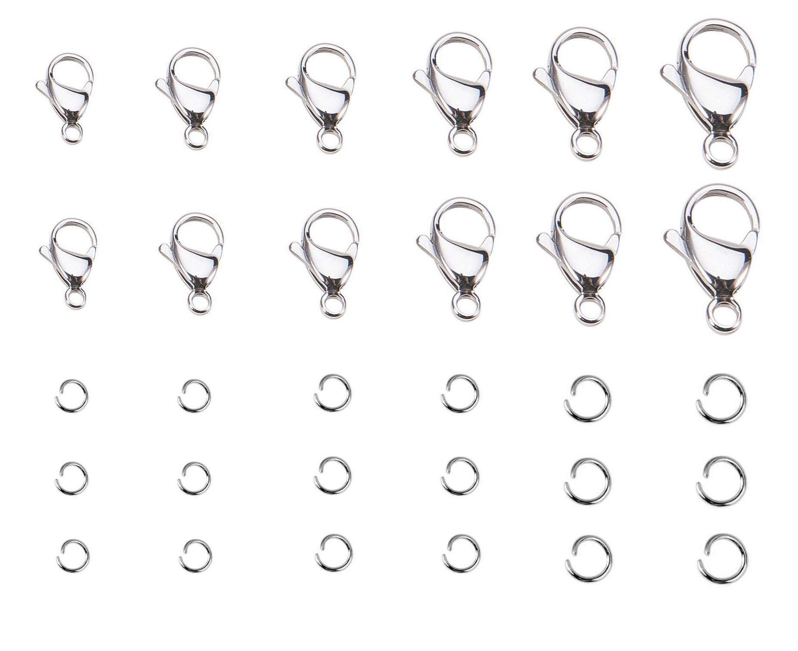
Jump Rings & Lobster Clasps
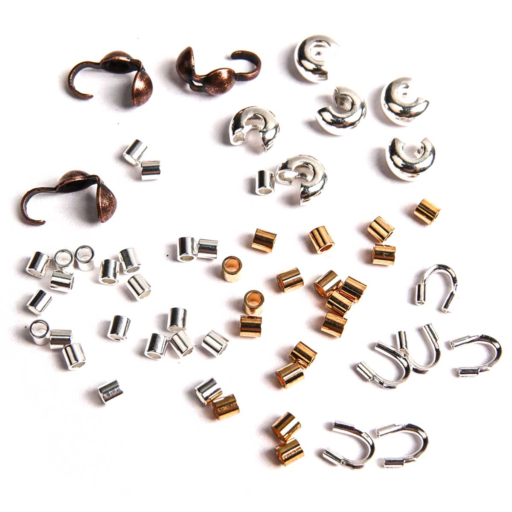
Crimps
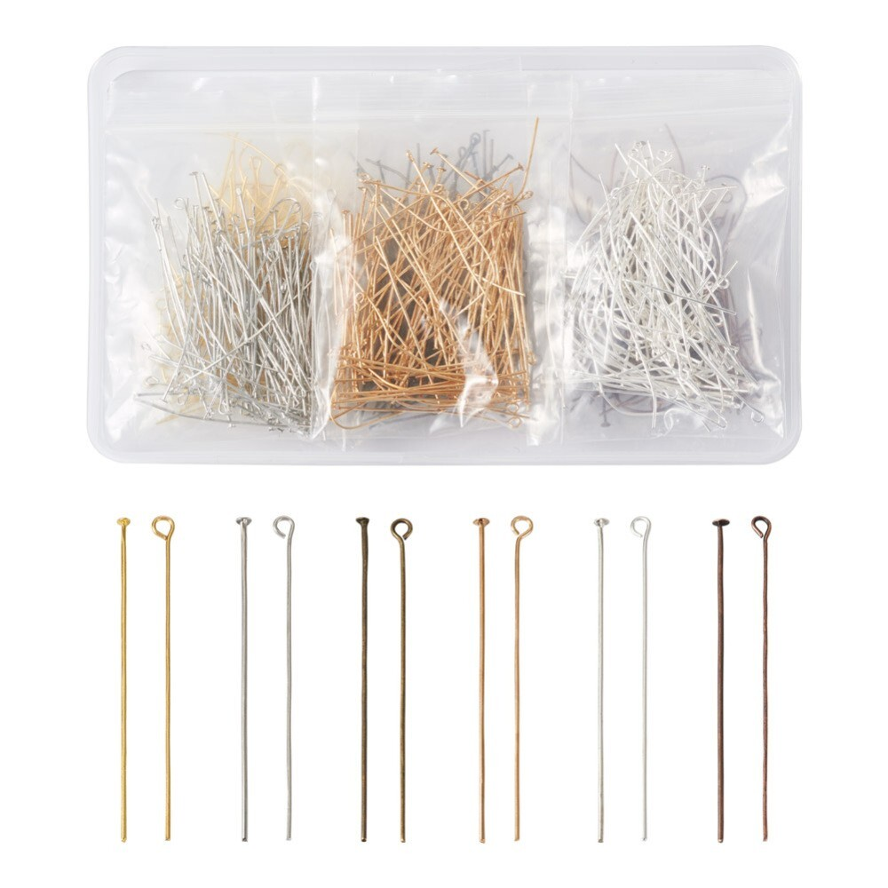
Eye and Head Pins
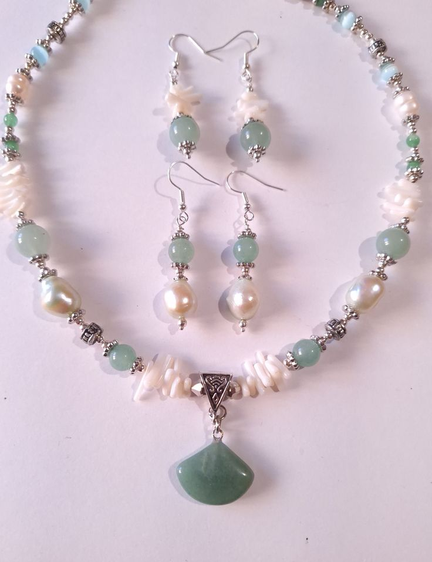
Craft 2 - Earrings & Necklace Set (jade + pearl)
───୨Tools─
I got my tools from my parents who also like jewelry-making. If you're able to get all these pliers, it'll help you in the long run. Sometimes, some tools are multipurpose. Like the one-step looper I mentioned earlier. I recommend having nose-pliers, wire cutters, crimping pliers, and definitely beading needles. Some beads aren't drilled properly and a needle helps poke your way through to string it. Something that's not on the list, is a lighter. I use it to burn the ends of thicker cord ropes and to secure the knots of heavier pieces. If flames scare you, glue works for sealing the ends of strings with frayed threads.
- Round-nose pliers
- Chain-nose pliers
- Flat-nose pliers
- Wire cutters
- One-step looper
- Crimping pliers
- Tweezers
- Beading needles
- Scissors
- Knotting tool or awl
- Silicone glue (E6000)
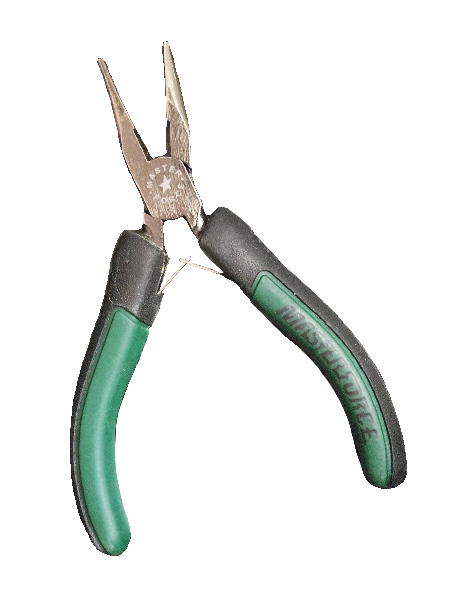
Plier Crimp
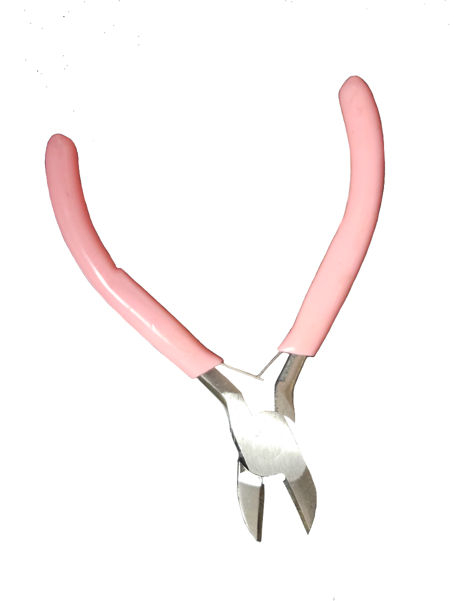
Wire Cutter
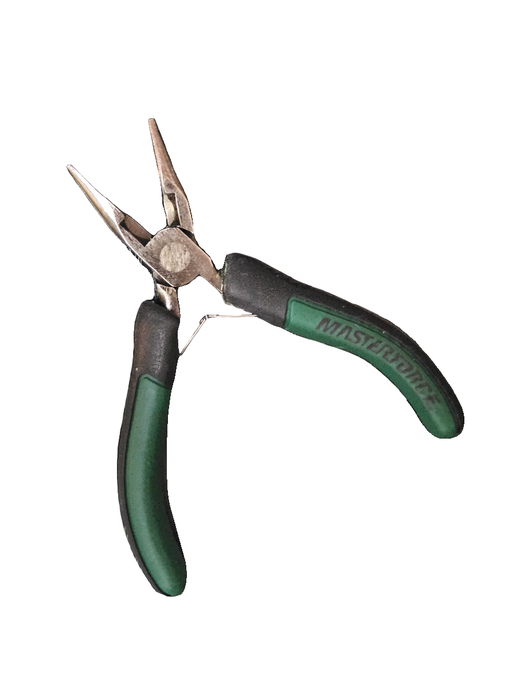
Nose Plier
───୨Organization─
- Bead storage boxes
- Small drawers
- Divided containers
- Mini jars
- Sorting trays
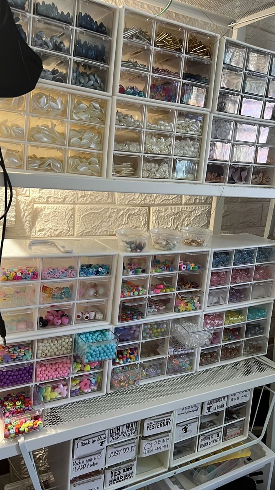
Bead Organization
───୨ৎExtras─
- Charm hangtags / acrylic logo tags
- Jump ring opener
- Keychain hardware
- Safety pins for bead charms
- Ribbon or fabric accents
- Mini tassels
- Premade cabochons
- Sticker flakes or PNGs for collage inspo
───୨ৎAdvanced (Specialty Supplies)─
- UV resin & UV lamp
- Resin pigments
- Glitter mixes
- Polymer clay or air-dry clay
- French-beading wire
- Embroidery floss (for bead embroidery)